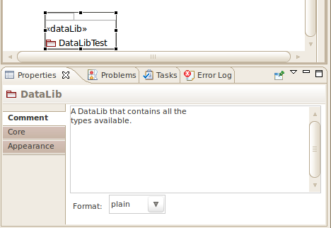

You can provide a multi-line comment for each element in a diagram to help convey the intent behind the element along with any additional information. These comments are preserved in the generated code.
To add a comment go to the property sheet and select the Comment tab. You can then type your comment in the sheet. An example is shown below.
Below the comment is a drop-down box to indicate if the format of the comment is plain text or should be mapped to the C++ source code as a Doxygen comment.
A comment can also be associated with a diagram itself. If you click on an empty portion of the diagram you will see the Comment tab in the property sheet. For the main diagram the comment applies to the model itself. For library diagrams the comment applies to the library.
For DataLibs, comments can be added to Fields and Keys. For example, select a Field and then click on the Comment tab to enter a comment for the Field.